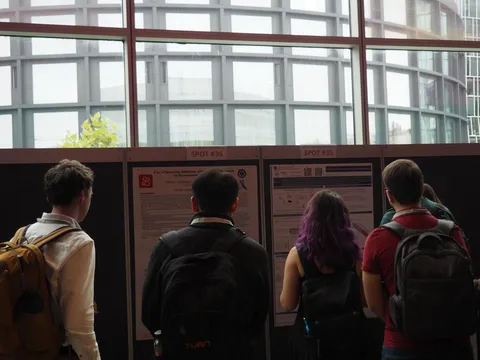
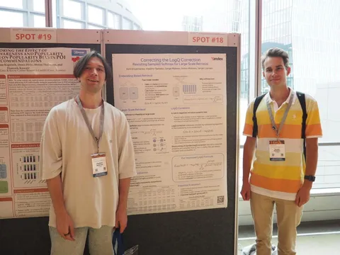
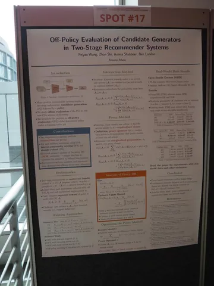
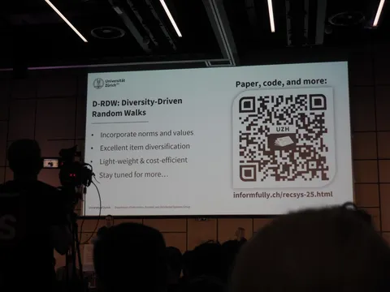
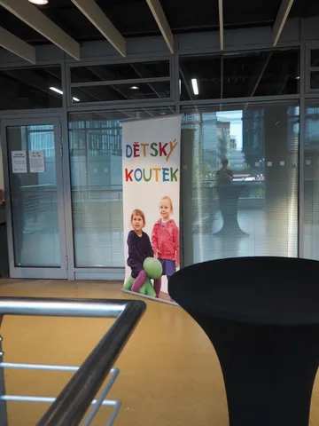
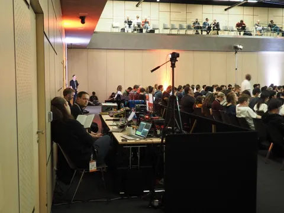
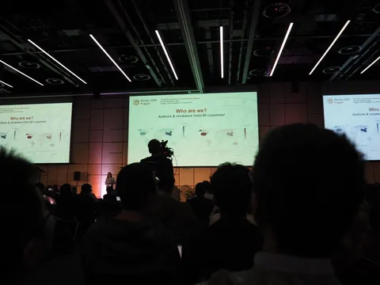

Продолжаем рассказывать, как проходит RecSys 2025 — девятая международная конференция о рекомендательных системах в Праге. В предыдущих сериях: TL;DR интересных статей и суммаризация воркшопов в Рекомендательной, а также таймлайн первого дня от Ивана Романова, нашего коллеги из Яндекс Вертикалей. Сегодня снова передадим слово Ивану: попросили его поделиться впечатлениями о втором дне конференции.
От второго дня конференции (он же первый «основной») у меня были заниженные ожидания: по опыту прошлых RecSys, сильнее всего запоминаются открывающий и закрывающий дни, когда в расписании есть воркшопы. Но всё оказалось лучше, чем я рассчитывал!
В аудитории с постерами постоянно бурлили интересные дискуссии. Мои коллеги, авторы работы Correcting the LogQ Correction, до последнего не снимали постер в ожидании Xinyang Yi, автора оригинальной статьи с LogQ. У меня тоже есть свои кумиры: повезло не только пообщаться с ребятами из Pinterest, но и задать вопросы одному из авторов статьи про PinFM.
Абсолютным фаворитом этого дня для меня стал постер от Amazon Music: Off-Policy Evaluation of Candidate Generators in Two-Stage Recommender Systems. Если коротко, авторы попытались замерить качество кандидатогенерации. Делать это на текущих пользовательских логах, на которые воздействует текущий КГ, неправильно из-за sample bias. А держать бесконечный рандомный сбор даже на 1% трафика — дорого. На помощь приходит off-policy evaluation: оценка политики на основе данных, собранных другой политикой.
Чисто академическая статья, в которой, как мне кажется, есть интересное направление работы с diversity: D-RDW. Diversity-Driven Random Walks. Авторы показывают алгоритм, который случайно ходит по сети «читатели — новости», выбирает материалы и проверяет, чтобы итоговый набор новостей соответствовал некоторым правилам баланса. Если соответствия нет — он подбирает другой набор, пока не получится нужная комбинация. Алгоритм сравнивают с MMR, на пальцах звучит прикольно — планирую закопаться и проверить.
Масштаб RecSys в этом году поражает. Слушать доклады можно не отходя от буфета (поймал на фото одного из звукорежиссёров), появилась комната для детей. Русскоговорящих на конференции много: в одном только чатике уже около 60 человек. А я познакомился с профессором из University of Pittsburgh, который закончил МГУ больше 30 лет назад.
Несколько инсайтов напоследок:🔴 В Google первые скрипты трейнов LLM переподнимали вручную в случае инцидентов ночью (когда обучение уходило в NaN/стопалось и т.п.) — после приняли решение вознаградить за это всех неравнодушных.🔴 Очень сложно есть и говорить на английском одновременно, это какой-то отдельный скилл. Присоединился на обеде к ребятам из IKEA и Telegraph, приходилось очень часто их переспрашивать.🔴 В IKEA и Telegraph сейчас используют только implicit feedback, хотя explicit тоже есть и такие действия уже логируются. А ещё ребята были очень удивлены размером Yambda-датасета и тем, как мы справляемся с обработкой таких объёмов данных, да ещё и с доказательством целесообразности скейла.
ML Underhood
